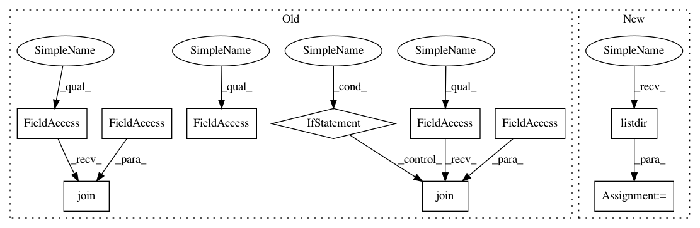

8f22750dbdac281232241c20736018c47a7a8e26,ants/utils/get_ants_data.py,,get_ants_data,#Any#,10
Before Change
if name == "r16":
datapath = os.path.join(data_path, "r16slice.jpg")
elif name == "r27":
datapath = os.path.join(data_path, "r27slice.jpg")
elif name == "r64":
datapath = os.path.join(data_path, "r64slice.jpg")
elif name == "r85":
datapath = os.path.join(data_path, "r85slice.jpg")
elif name == "mni":
datapath = os.path.join(data_path, "mni.nii.gz")
elif name == "surf":
datapath = os.path.join(data_path, "surf.nii.gz")
After Change
filepath of test image
datapath = None
for fname in os.listdir(data_path):
if name in fname:
datapath = os.path.join(data_path, fname)
if datapath is None:
raise ValueError("File doesnt exist. Options: " , os.listdir(data_path))
return datapath
In pattern: SUPERPATTERN
Frequency: 3
Non-data size: 10
Instances
Project Name: ANTsX/ANTsPy
Commit Name: 8f22750dbdac281232241c20736018c47a7a8e26
Time: 2017-09-07
Author: ncullen.th@dartmouth.edu
File Name: ants/utils/get_ants_data.py
Class Name:
Method Name: get_ants_data
Project Name: ANTsX/ANTsPy
Commit Name: 8f22750dbdac281232241c20736018c47a7a8e26
Time: 2017-09-07
Author: ncullen.th@dartmouth.edu
File Name: ants/utils/get_ants_data.py
Class Name:
Method Name: get_ants_data
Project Name: reinforceio/tensorforce
Commit Name: cd50ec1c075fed30b19771879b818ba14ecfb816
Time: 2020-07-05
Author: alexkuhnle@t-online.de
File Name: test/test_features.py
Class Name: TestFeatures
Method Name: test_pretrain
Project Name: reinforceio/tensorforce
Commit Name: cd50ec1c075fed30b19771879b818ba14ecfb816
Time: 2020-07-05
Author: alexkuhnle@t-online.de
File Name: test/test_saving.py
Class Name: TestSaving
Method Name: test_modules